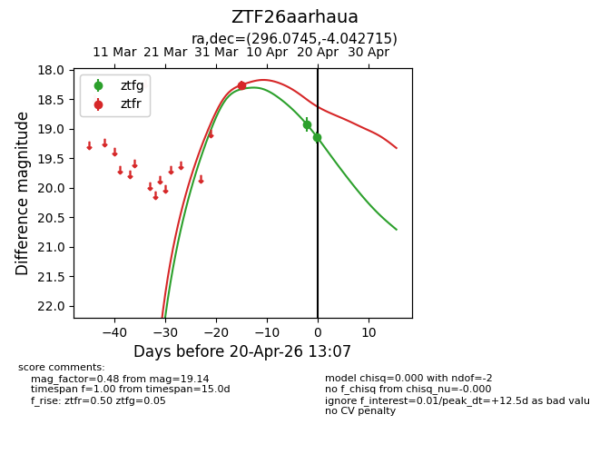
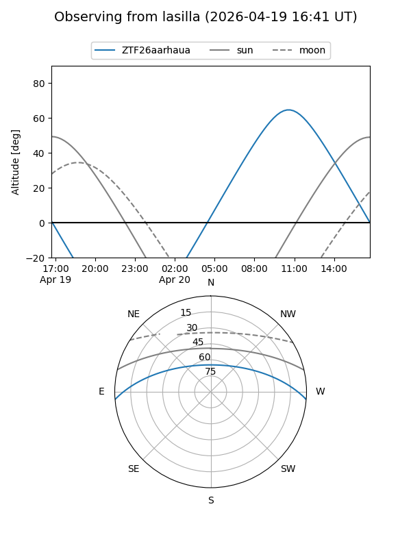
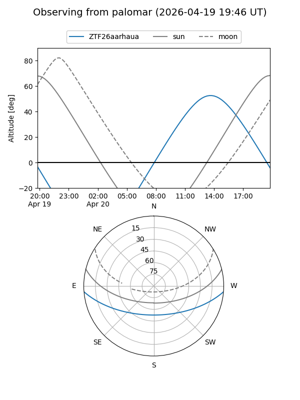
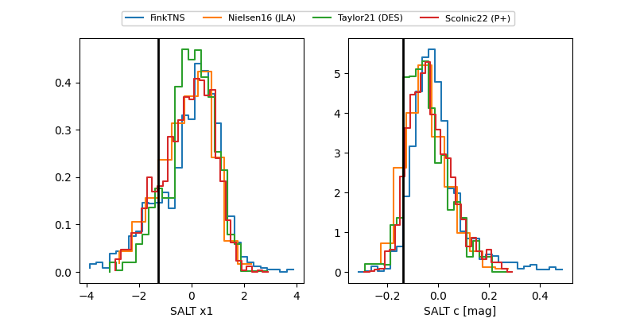

ZTF26aarhaua
Target ZTF26aarhaua at 2026-04-20 13:19
Aliases and brokers:
FINK: link
Lasair: link
ALeRCE: link
alt names
ZTF26aarhaua (ztf,fink_ztf)
Coordinates:
equatorial (ra, dec) = 296.0745,-4.04272
equatorial (HMS+DMS) = 19:44:17.87,-04:02:33.77
galactic (l, b) = (35.3635,-13.59732)
Flags:
Photometry:
last ztfg=19.14, ztfr=18.26
2 ztfg, 1 ztfr detections
Lightcurve

Visibility


Additional plots
